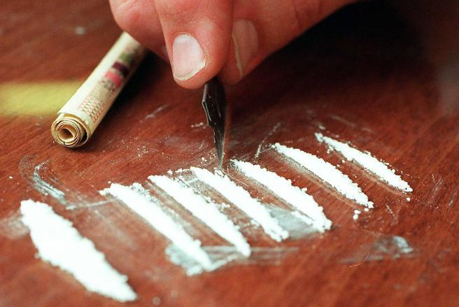

Амфетамин (α-метилфенилэтиламин).
Является одним из лучших стимуляторов, весьма распространен в этой стране.
Известен также как фен, спиды. В целом отлично подойдет для того, чтобы получить прилив сил и энергии, но многие употребляют вовсе не для этого, а для того, чтобы объебаться.
Действие:
амфетамина связано
с повышением настроением, возникает желание что-нибудь делать, появляется чувство уверенности и комфорта. Сон, аппетит уходит нахуй,
если вы упороли это в-во. Фен вызывает у человека неиллюзорную зависимость, к несчастью, в данном случае можно говорить о существовании
физической зависимости, ведь, слезая с него, вы будете чувствовать усталость, сонливость, депрессию.
Передозировка:
также возможна,
вы получите сердечный приступ. Быстрее всего формируется зависимость при употреблении по вене, потом идут уже другие способы употребления данного в-ва.
Если все же чувствуете себя хуево, то помните, что вам необходим минимум физ.нагрузок, поменьше курите.
Очень эффективно помогают нейролептики (аминазин, трифтазин), неплохо бензодиазепины (диазепам, феназепам).
Если их нет (а их, конечно, нет, ведь барыги ими не банчат, но банчат аптеки, если выполняются определенные условия), то помогает корвалол/валокордин.
Если вдруг заболели виски — это спазм сосудов, от него хорошо спасают две таблетки но-шпы.
Никогда не употребляйте фен вместе с алкоголем, кофеином, антидепрессантами, препаратами, стимулирующими потенцию.
Все эти смеси приводят к очень дурным последствиям. Также стоит учитывать, то что фен обычно разбавляют самыми разными веществами, начиная от крахмала и заканчивая стиральным порошком.
Поэтому доза активного в-ва изменяется, в связи с чем очень легко получить передоз, хотя кому-то и 100 мг будут смертельными, а кто-то и 2000 мг упороть сможет, все
индивидуально, впрочем, как и всегда. Купить можно повсеместно, даже в моей мухосрани. Цена варьируется по городам.